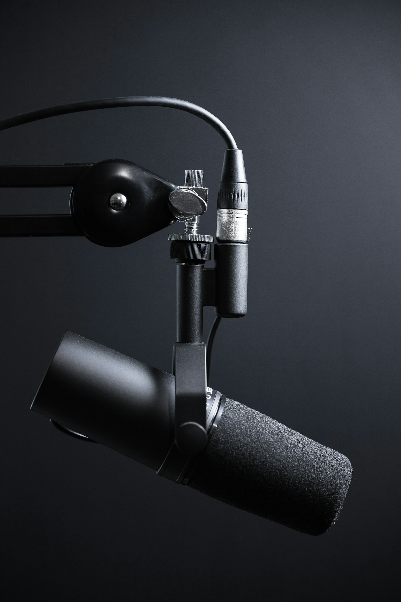
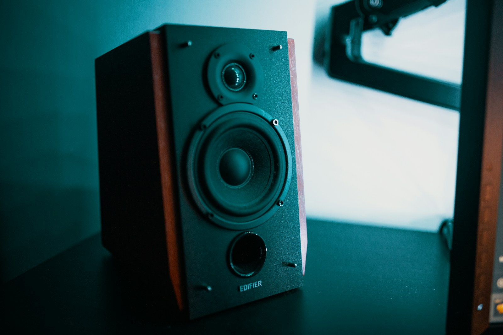
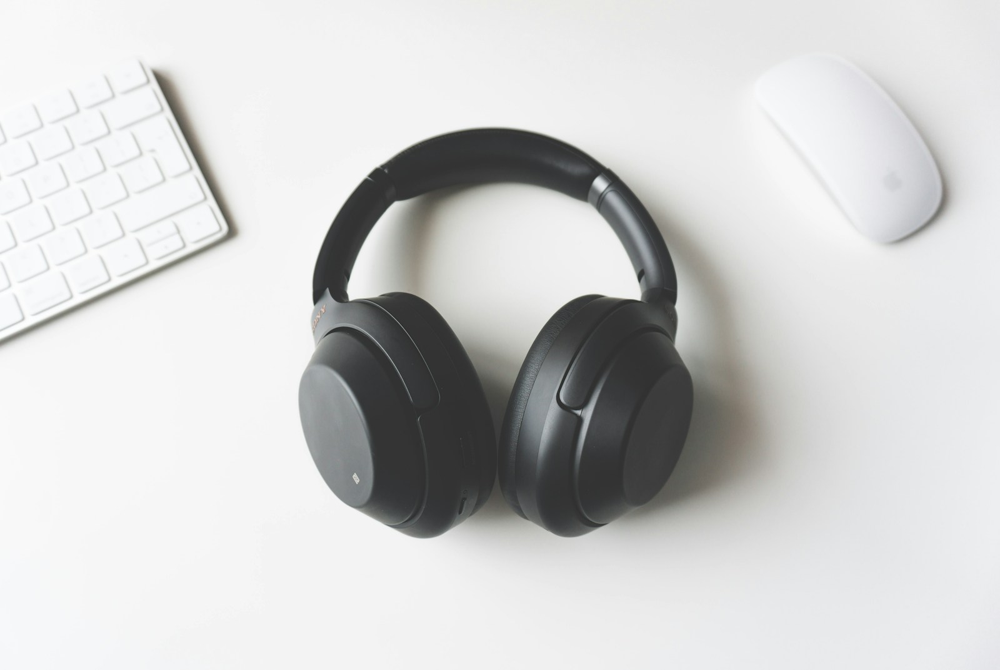

Микрофоны
Конденсаторный микрофон
Детальная передача вокала и акустических инструментов. Большая мембрана и кардиоидная направленность.
От первого сигнала до финального прослушивания. Познакомьтесь с комплектацией студии и найдите нужное оборудование.

Детальная передача вокала и акустических инструментов. Большая мембрана и кардиоидная направленность.

Для громкого вокала, репетиций и гитарных усилителей. Устойчив к высоким уровням звука.

Компактное решение для сольных сессий. Два входа для микрофона или инструмента и прямой мониторинг.

Многоканальная запись группы с раздельными дорожками. Микрофонные предусилители и выходы для мониторинга.

Активная стереопара для контроля баланса и пространства. Используется при записи и сведении.

Закрытая конструкция для записи вокала без утечки фонограммы в микрофон. Индивидуальный мониторинг.
Управление уровнями на репетиции. Микрофонные входы, эквализация и отдельный выход на наушники.
Гибкая маршрутизация сигнала и сохранение настроек сессии. Для записи и работы с несколькими исполнителями.

Живой инструмент для камерной записи и акустических проектов. Доступен в студии E.

Для репетиций и поиска новых партий. Подключается к комбоусилителю или инструментальному входу.
Детальная передача вокала и акустических инструментов. Большая мембрана и кардиоидная направленность.
Для громкого вокала, репетиций и гитарных усилителей. Устойчив к высоким уровням звука.
Компактное решение для сольных сессий. Два входа для микрофона или инструмента и прямой мониторинг.
Многоканальная запись группы с раздельными дорожками. Микрофонные предусилители и выходы для мониторинга.
Активная стереопара для контроля баланса и пространства. Используется при записи и сведении.
Закрытая конструкция для записи вокала без утечки фонограммы в микрофон. Индивидуальный мониторинг.
Управление уровнями на репетиции. Микрофонные входы, эквализация и отдельный выход на наушники.
Гибкая маршрутизация сигнала и сохранение настроек сессии. Для записи и работы с несколькими исполнителями.
Живой инструмент для камерной записи и акустических проектов. Доступен в студии E.
Для репетиций и поиска новых партий. Подключается к комбоусилителю или инструментальному входу.
Попробуйте другое название или категорию.
В каталоге указаны основные характеристики оборудования. Фотографии иллюстрируют категории и не являются точными изображениями моделей.
Базовая комплектация включена в стоимость аренды. Выберите помещение под вашу задачу.